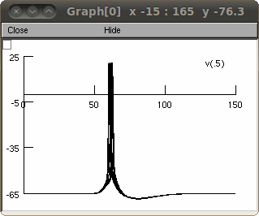

NEURON mod files from the paper: Culmone V, Migliore M (2012) Progressive effect of beta-amyloid peptides accumulation on CA1 pyramidal neurons: a model study suggesting possible treatments. Front. Comput. Neurosci. 6:52. doi: 10.3389/fncom.2012.00052 The model predicts possible therapeutic treatments of Alzheimers's Disease in terms of pharmacological manipulations of channels' kinetic and activation properties. The results suggest how and which mechanism can be targeted by a drug to restore the original firing conditions. The simulations reproduce somatic membrane potential in control conditions, when 90% of membrane is affected by AD (Fig.4A of the paper), and after treatment (Fig.4B of the paper):  Under unix systems: to compile the mod files use the command nrnivmodl and run the simulation hoc file with the command nrngui membrane_potential.hoc Under Windows systems: to compile the mod files use the "mknrndll" command. A double click on the simulation file membrane_potential.hoc will open the simulation window. Under Mac OS X systems: Drag and drop the alzheimer folder onto the mknrndll icon. Drag and drop the mosinit.hoc file onto the nrngui icon. Questions on how to use this model should be directed to viviana.abigail@hotmail.it